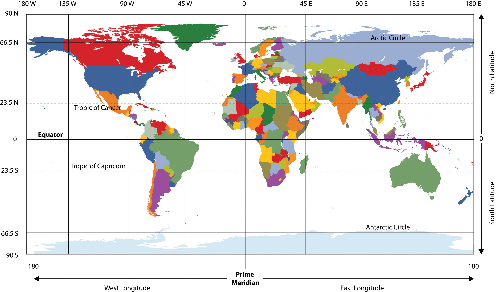
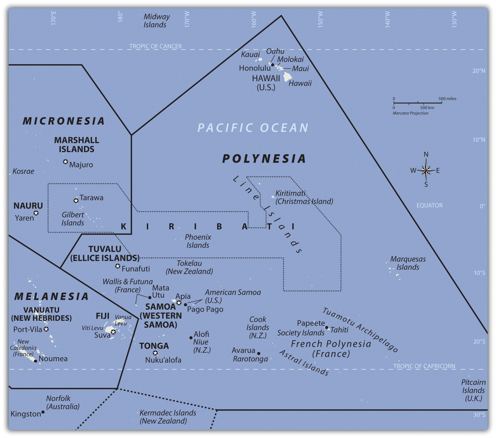
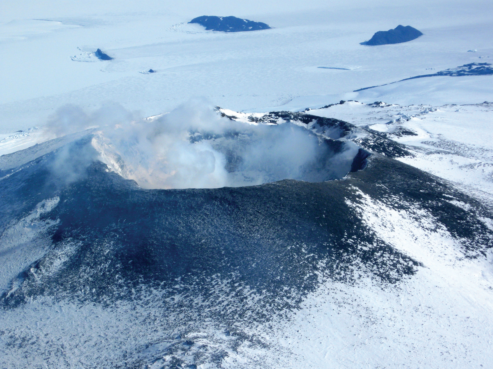

At a Glance
At a Glance
Learning Outcomes
- Create: Synthesize geographic patterns across all world regions to construct a holistic understanding of global systems.
- Analyze: Examine the concept of the Anthropocene and evaluate the scale of human impact on Earth's physical systems.
- Evaluate: Assess the interconnected challenges of climate change, forced migration, economic inequality, and resource competition across regions.
- Apply: Apply geographic inquiry skills (spatial analysis, scale, place, human-environment interaction) to address problems in your own community.
- Evaluate: Critically assess the Sustainable Development Goals (SDGs) as a framework for measuring and addressing global challenges.
Key Terms
Anthropocene, Globalization, Glocalization, Sustainable Development, Global North/South, Diaspora, Remittances, Spatial Justice, Supply Chain, Placelessness, Core-Periphery Model, Climate Justice.
Stop & Check
Reveal Answer
Common Misconception
Myth: Geography is just memorizing maps and capital cities.
Fact: Geography is the study of spatial relationships, the "why of where." It connects physical science with social science to explain how places are shaped by natural processes, human decisions, and global connections. Memorizing locations is just a starting point; the real work of geography is analyzing the complex interactions between people and places.
Global Patterns and Connections
Throughout this course, we have examined each world region as a distinct geographic entity, with its own physical landscapes, cultural traditions, economic structures, and political challenges. But no region exists in isolation. The defining feature of the 21st century is the accelerating interconnectedness of all regions through flows of goods, capital, people, information, and environmental impacts. Understanding these connections is the ultimate goal of geographic literacy.

Economic Flows: Global Supply Chains
The modern global economy is organized through supply chains that span multiple continents. A single smartphone, for example, may contain rare earth minerals mined in the Democratic Republic of Congo (Chapter 6), processed in China (Chapter 9), assembled in Vietnam (Chapter 10), designed in the United States (Chapter 4), and sold in Europe (Chapter 2). These supply chains create enormous economic interdependence but also profound vulnerability: the COVID-19 pandemic revealed how disruptions in one region can cascade across the entire global system within days.
The geographic pattern of these flows is not random. It reflects the core-periphery model that has shaped global economics since the colonial era. Core regions (North America, Europe, East Asia) tend to capture the highest-value activities, such as design, finance, and marketing, while peripheral regions supply raw materials and low-cost labor. However, this model is evolving. Countries like China, India, and Brazil have moved from periphery toward core status within a single generation, while others, particularly in Sub-Saharan Africa and small island states, remain trapped in peripheral roles despite having contributed some of the world's most essential resources.
Human Migration: The Movement of Peoples
Human migration has shaped every region we have studied. From the Bantu migrations that spread language and agriculture across Africa to the European colonization that transformed the Americas, Australia, and much of Asia, the movement of people is one of geography's most powerful forces. Today, approximately 281 million people live outside their country of birth, the highest number in human history.
Migration flows follow distinct geographic patterns. Labor migration moves workers from developing to developed regions: from Latin America to North America, from South and Southeast Asia to the Persian Gulf states, from North and Sub-Saharan Africa to Europe. Forced migration displaces people through conflict and persecution: Syrian refugees in Turkey and Europe, Rohingya refugees from Myanmar in Bangladesh, Venezuelan refugees across South America. Climate migration, still emerging as a category, threatens to displace millions more from low-lying Pacific islands, drought-stricken Sahel regions, and flood-prone river deltas in South and Southeast Asia.
Remittances, the money that migrants send back to their home countries, now exceed $700 billion annually, surpassing foreign direct investment and development aid to many nations. In countries like Nepal, Honduras, and the Philippines, remittances constitute over 20% of GDP, making diaspora communities a critical economic lifeline. This creates a geographic paradox: the very regions that export their workers often depend most on the income those workers send home.
Cultural Exchange and Glocalization
The spread of information, ideas, music, food, and language across borders has accelerated dramatically through digital networks. A K-pop song composed in Seoul can reach audiences in Lagos, Sao Paulo, and Houston simultaneously. Bollywood films attract viewers across Africa and the Middle East. Latin American telenovelas shape popular culture in Southeast Asia. This cultural exchange is not simply Western-to-non-Western, as it was often characterized in the 20th century; it is increasingly multi-directional.
The concept of glocalization captures how global products and ideas are adapted to local cultural contexts. McDonald's serves McSpicy Paneer burgers in India, teriyaki burgers in Japan, and McArabia wraps in the Middle East. Global brands succeed not by imposing uniformity but by adapting to geographic and cultural diversity. However, concerns about placelessness, the homogenization of landscapes so that one city center looks like any other, remain valid. Shopping malls in Dubai, Bangkok, and Houston can feel eerily interchangeable, raising questions about what is lost when local character gives way to global standardization.
Interconnected Challenges of the 21st Century
The greatest challenges facing humanity in the 21st century are inherently geographic: they are unevenly distributed across space, they connect regions in complex ways, and they require solutions that account for both local conditions and global systems. Three challenges stand out as defining the current era.
The Climate Emergency
Climate change is the defining geographic challenge of our time. It is a global phenomenon driven primarily by fossil fuel combustion in industrialized nations, but its impacts fall disproportionately on the regions that have contributed least to the problem. This geographic injustice is central to understanding why international climate negotiations remain so contentious.
Consider the regional pattern: the United States and Europe, which industrialized earliest, are responsible for the largest cumulative share of historical greenhouse gas emissions. China and India, while now among the largest annual emitters, have far lower per-capita emissions and argue that they should not be held to the same standards as nations that grew wealthy through unrestricted emissions for over a century. Meanwhile, Sub-Saharan Africa and Small Island Developing States, which contribute minimal emissions, face some of the most severe consequences: desertification in the Sahel, sea-level rise in the Pacific, intensifying hurricanes in the Caribbean, and droughts that threaten food security across the continent.


Inequality and the Development Gap
The gap between the "Global North" and "Global South" remains one of geography's most persistent patterns, though the traditional binary is increasingly inadequate. The rise of China, India, Brazil, and other emerging economies has complicated the simple rich-north/poor-south division. Today, extreme wealth and extreme poverty exist side by side within individual countries, including in the United States, where life expectancy can vary by 20 years between neighborhoods just a few miles apart.
Geographic patterns of inequality are reinforced by what economists call the "resource curse": many of the world's most resource-rich nations (in Sub-Saharan Africa, the Middle East, and Central Asia) remain trapped in poverty because resource extraction benefits foreign corporations and local elites while providing few jobs or development opportunities for ordinary citizens. The geographic concept of spatial justice asks us to consider how the physical distribution of resources, infrastructure, and opportunity across space creates and perpetuates inequality.
The Sustainable Development Goals (SDGs), adopted by the United Nations in 2015, provide a framework of 17 interconnected goals designed to end poverty, protect the planet, and ensure prosperity for all by 2030. As the data visualization below shows, progress is uneven, and the geographic distribution of that progress tells a powerful story about which regions have the capacity to meet these goals and which do not.
Geopolitical Competition and the New Cold War
The post-Cold War era of American unipolarity is giving way to a multipolar world in which the United States, China, and the European Union compete for influence, while Russia, India, and regional powers pursue their own strategic interests. This competition has a deeply geographic dimension. China's Belt and Road Initiative (BRI) is reshaping infrastructure and trade routes across Central Asia, Africa, Southeast Asia, and Latin America. The United States and its allies counter with competing infrastructure programs. Russia's invasion of Ukraine in 2022 disrupted energy markets across Europe and food supply chains across the Middle East and Africa, demonstrating how conflict in one region reverberates globally.
For students of geography, the key insight is that geopolitical competition is fundamentally about control of space: trade routes, resource deposits, strategic chokepoints (the Strait of Hormuz, the Suez Canal, the South China Sea), and the loyalties of populations in contested regions. The same geographic principles that shaped colonial empires continue to drive 21st-century great-power competition, even as the tools and justifications have evolved.
Data Exploration: Progress on the Sustainable Development Goals
The United Nations' 17 Sustainable Development Goals (SDGs) provide a framework for measuring global progress on humanity's most pressing challenges. The chart below shows the estimated percentage of countries "on track" to meet each SDG by 2030. The picture is sobering and deeply geographic: progress varies enormously by world region, with Sub-Saharan Africa and Small Island Developing States furthest from meeting most goals.
Geographic Synthesis: Notice that SDG 6 (Clean Water) and SDG 7 (Clean Energy) show the most progress, reflecting sustained global investment in infrastructure. SDG 14 (Ocean Life) and SDG 15 (Land Life), which require environmental protection rather than economic development, are falling furthest behind. How does the geographic distribution of economic power, natural resources, and climate vulnerability explain which goals are being met and which are being neglected?
The COVID-19 Pandemic: A Geographic Stress Test
The COVID-19 pandemic, which emerged in Wuhan, China in late 2019 and spread globally within weeks, served as a real-time demonstration of nearly every geographic concept covered in this course. The virus traveled along the same supply chains, migration corridors, and transportation networks that define global connectivity. Its impacts, however, were profoundly shaped by the geographic conditions of each region.
In Europe, dense urban populations and extensive transportation networks facilitated rapid spread, but robust healthcare systems and social safety nets cushioned the economic blow. In Sub-Saharan Africa, younger populations experienced lower mortality rates, but weak healthcare infrastructure and informal economies made lockdowns devastating. In South and Southeast Asia, migrant workers, suddenly unemployed, walked hundreds of kilometers to return to home villages, creating humanitarian crises at national borders. In Latin America, massive informal sectors made social distancing impossible for millions who depended on daily labor to eat.
The pandemic also exposed the core-periphery model with devastating clarity. Wealthy nations secured the vast majority of initial vaccine supplies, while poorer nations waited months or years for access, a pattern that public health experts called "vaccine apartheid." The geographic distribution of vaccine access correlated almost perfectly with the Global North/South divide, reinforcing the structural inequalities this chapter examines.
Questions to Consider:
- How did the geographic concepts of connectivity and diffusion explain the pattern of COVID-19's global spread?
- Why did the pandemic's economic and health impacts vary so dramatically across world regions? What geographic factors, such as urbanization, age structure, healthcare infrastructure, and economic structure, explain these differences?
- The pandemic accelerated trends toward remote work, reshored manufacturing, and digital connectivity. How might these shifts permanently alter the geographic patterns of economic activity studied throughout this course?
Geographic Thinking for the Future
Geographic literacy is not a body of facts to be memorized; it is a way of thinking. As you complete this course, you carry forward a set of analytical tools that apply to virtually any issue you will encounter as a citizen, professional, and human being:
- Spatial Thinking: The ability to see patterns in how phenomena are distributed across space, and to ask "why here and not there?"
- Scale: The understanding that every issue operates at multiple scales simultaneously, from local to global, and that what appears true at one scale may look very different at another.
- Place: The appreciation that every location has a unique combination of physical and human characteristics that shapes what is possible there.
- Human-Environment Interaction: The recognition that humans shape environments and environments shape human possibilities, in an ongoing, reciprocal relationship.
- Movement and Connectivity: The awareness that no place exists in isolation; flows of people, goods, ideas, and environmental impacts connect every region to every other.
- Regions: The ability to organize the complexity of the world into meaningful categories while recognizing that all regional boundaries are human constructions that simplify a more complex reality.
Geographic Inquiry
Now that you have studied all world regions, select a single global challenge, such as climate change, food security, migration, or water scarcity, and trace its geographic dimensions across at least three regions covered in this course. How does the challenge manifest differently in each region? What geographic factors (physical environment, economic structure, political history, cultural values) explain these differences? And what does your analysis suggest about whether effective solutions can be global, or whether they must always be adapted to local geographic contexts?
- Anthropocene
- A proposed geological epoch, not yet formally adopted, in which human activity has become the dominant influence on Earth's climate, ecosystems, and geology.
- Climate Justice
- A framework that recognizes the unequal distribution of climate change impacts and responsibilities, arguing that those who contributed most to the problem should bear the greatest burden of addressing it.
- Core-Periphery Model
- A theory of spatial organization in which economically powerful "core" regions dominate and extract resources from less powerful "peripheral" regions, both within and between countries.
- Diaspora
- A dispersed population whose origin lies in a separate geographic locale. Examples include the Chinese, Indian, and African diasporas studied throughout this course.
- Glocalization
- The adaptation of global products, services, or cultural phenomena to suit local markets, tastes, and cultural norms.
- Globalization
- The process of increasing interconnectedness among people, companies, and governments worldwide, driven by trade, migration, technology, and cultural exchange.
- Global North/South
- A socioeconomic division between wealthier, more industrialized nations (primarily in the Northern Hemisphere) and developing nations (primarily in the Southern Hemisphere). The division is imperfect but useful for identifying patterns of inequality.
- Placelessness
- The loss of distinctive local character in the cultural landscape, so that one shopping district, suburb, or airport looks much like any other regardless of geographic location.
- Remittances
- Money sent by migrants working abroad back to their home countries. Remittances now exceed $700 billion annually and are a critical source of income for many developing nations.
- Spatial Justice
- A framework for analyzing how the geographic distribution of resources, opportunities, and environmental burdens across space creates or perpetuates social inequality.
- Supply Chain
- The network of organizations, people, activities, information, and resources involved in producing and delivering a product from raw material extraction to final consumer.
- Sustainable Development
- Development that meets the needs of the present without compromising the ability of future generations to meet their own needs (Brundtland Commission, 1987).
- No Region Exists in Isolation: Every region studied in this course is connected to every other through flows of goods, capital, people, ideas, and environmental impacts. Geography helps us see both the uniqueness of places and the connections between them.
- Global Supply Chains: Modern economic production spans multiple continents, linking resource extraction in the Global South to consumption in the Global North. These chains create interdependence but also reproduce core-periphery inequalities.
- Migration as a Geographic Force: The movement of over 281 million people across borders reshapes demographics, economies, and cultures in both sending and receiving regions. Remittances now exceed $700 billion annually.
- Climate Change is a Geographic Justice Issue: The regions that have contributed least to greenhouse gas emissions (Sub-Saharan Africa, Small Island Developing States) face the most severe consequences, while the regions most responsible have the greatest capacity to adapt.
- The Anthropocene: Human activity has become the dominant force shaping Earth's physical systems, from atmospheric composition to biodiversity loss. Recognizing this demands a rethinking of the human-environment relationship at the core of geographic inquiry.
- The SDGs as Geographic Measure: Progress on the Sustainable Development Goals is profoundly uneven across regions, reflecting the persistent gap between the Global North and Global South and the challenges of achieving global cooperation.
- Glocalization vs. Placelessness: The tension between global homogenization and local cultural adaptation is a defining geographic process of the 21st century.
- Geopolitical Competition: Great-power rivalry between the United States, China, Russia, and the EU is fundamentally about control of geographic space: trade routes, resources, strategic chokepoints, and regional influence.
- Geographic Literacy: The analytical tools of geography, spatial thinking, scale, place, human-environment interaction, movement, and regions, equip citizens to navigate the complexity of global challenges and contribute to just, sustainable solutions.
The Global Goals Summit: Prioritizing Our Planet's Future
The United Nations has convened an emergency summit. The world is off-track on nearly every Sustainable Development Goal. With limited global funding and political will, world leaders must decide which challenges to prioritize. You represent a world region and must advocate for the issues most critical to your people while negotiating with regions that have very different priorities.
Role A: Sub-Saharan Africa Bloc
Your region has the world's fastest-growing population, the youngest demographic profile, and the greatest need for investment in education, healthcare, and infrastructure. You argue that poverty eradication and food security must come before climate action: you cannot ask people to sacrifice development for a problem they did not cause.
Role B: Small Island Developing States (SIDS)
Climate change is an existential threat to your nations right now, not in 2100. You demand immediate, binding emissions reductions from wealthy nations and a robust Loss and Damage fund. Every other development goal is meaningless if your islands disappear beneath the waves.
Role C: Emerging Economies (India, Brazil, Indonesia)
You represent billions of people who are just beginning to industrialize and lift themselves out of poverty. You argue that wealthy nations industrialized without restrictions for 200 years. You demand technology transfers, green financing, and differentiated responsibilities before you will commit to binding emissions targets.
Role D: Wealthy Nations (EU, USA, Japan)
You provide most of the world's development aid and climate finance. You want binding commitments from all nations on emissions, democratic governance, and human rights as conditions for aid. You face domestic political pressure to prioritize your own citizens' economic concerns and skepticism about the effectiveness of international agreements.
Knowledge Check
Test your understanding of the core concepts covered in this chapter. This quiz consists of multiple-choice questions designed to review key terms, global patterns, and the geographic connections explored throughout the course. Select the best answer for each question to receive immediate feedback.
Loading quiz questions...
Discussion and Reflection Prompts
Reflect on Your Learning
- Synthesis Reflection: How has your understanding of geography changed throughout this course? Which concepts or regions surprised you most? What assumptions did you hold at the beginning of the semester that you now question?
- Global Interconnection: Choose two regions from this course and analyze how they are connected through trade, migration, culture, or environmental systems. How do these connections benefit or harm the people in each region?
- Personal Agency: How can you apply geographic thinking to address challenges in your own community, career, or daily life? Identify a specific issue in your neighborhood or city and explain how geographic analysis, considering spatial patterns, scale, human-environment interaction, could contribute to better outcomes.
Discuss With Your Peers
- What are the most pressing geographic challenges facing humanity today? How are climate change, migration, inequality, and geopolitical competition interconnected? Can any of these challenges be solved in isolation?
- The concept of "climate justice" argues that wealthy nations owe a debt to poorer nations for the environmental damage caused by industrialization. Do you agree? How should this debt be calculated and paid?
- Whose voices are missing from international discussions about global challenges? How does geographic location, economic power, and political representation determine who shapes global policy and who is excluded from the conversation?
Curriculum Standards Alignment
This chapter aligns with the following National and State geography standards.